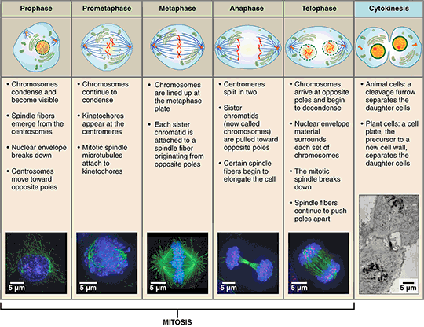

CELL DIVISION
Cell division is a fundamental biological process that enables growth, development, and reproduction in all living organisms. This project explores the mechanisms of cell division, including mitosis and meiosis, highlighting their significance in genetics, tissue regeneration, and disease prevention. We aim to provide a detailed analysis of the stages, regulatory factors, and real-world applications of cell division in medicine and biotechnology.
Project Team
Janhavi kishor-RA2411026010382Rupsikha deb- RA2411026010415
Gayathri V- RA2411026010370
Dhruv chauhan- RA2411026010414
Vatsal Srivastava- RA2411026010431
Sambhit Mishra - RA2411026010409
Where Do Cells Come From?
Sometimes you accidentally bite your lip or skin your knee, but in a matter of days the wound heals. Is it magic? Or, is there another explanation? Every day, every hour, every second one of the most important events in life is going on in your body—cells are dividing. When cells divide, they make new cells. A single cell divides to make two cells and these two cells then divide to make four cells, and so on. We call this process "cell division" and "cell reproduction," because new cells are formed when old cells divide. The ability of cells to divide is unique for living organisms.
Why Do Cells Divide?
Cells divide for many reasons. For example, when you skin your knee, cells divide to replace old, dead, or damaged cells. Cells also divide so living things can grow. When organisms grow, it isn't because cells are getting larger. Organisms grow because cells are dividing to produce more and more cells. In human bodies, nearly two trillion cells divide every day.
How Many Cells Are in Your Body?
You and I began as a single cell, or what you would call an egg. By the time you are an adult, you will have trillions of cells. That number depends on the size of the person, but biologists put that number around 37 trillion cells. Yes, that is trillion with a "T."
How Do Cells Know When to Divide?
In cell division, the cell that is dividing is called the "parent" cell. The parent cell divides into two "daughter" cells. The process then repeats in what is called the cell cycle. Cells regulate their division by communicating with each other using chemical signals from special proteins called cyclins. These signals act like switches to tell cells when to start dividing and later when to stop dividing. It is important for cells to divide so you can grow and so your cuts heal. It is also important for cells to stop dividing at the right time. If a cell can not stop dividing when it is supposed to stop, this can lead to a disease called cancer. Some cells, like skin cells, are constantly dividing. We need to continuously make new skin cells to replace the skin cells we lose. Did you know we lose 30,000 to 40,000 dead skin cells every minute? That means we lose around 50 million cells every day. This is a lot of skin cells to replace, making cell division in skin cells is so important. Other cells, like nerve and brain cells, divide much less often.

How Cells Divide
Depending on the type of cell, there are two ways cells divide—mitosis and meiosis. Each of these methods of cell division has special characteristics. One of the key differences in mitosis is a single cell divides into two cells that are replicas of each other and have the same number of chromosomes. This type of cell division is good for basic growth, repair, and maintenance. In meiosis a cell divides into four cells that have half the number of chromosomes. Reducing the number of chromosomes by half is important for sexual reproduction and provides for genetic diversity.
Mitosis Cell Division
Mitosis is how somatic—or non-reproductive cells—divide. Somatic cells make up most of your body's tissues and organs, including skin, muscles, lungs, gut, and hair cells. Reproductive cells (like eggs) are not somatic cells. In mitosis, the important thing to remember is that the daughter cells each have the same chromosomes and DNA as the parent cell. The daughter cells from mitosis are called diploid cells. Diploid cells have two complete sets of chromosomes. Since the daughter cells have exact copies of their parent cell's DNA, no genetic diversity is created through mitosis in normal healthy cells.

The Mitosis Cell cycle
Before a cell starts dividing, it is in the "Interphase." It seems that cells must be constantly dividing (remember there are 2 trillion cell divisions in your body every day), but each cell actually spends most of its time in the interphase. Interphase is the period when a cell is getting ready to divide and start the cell cycle. During this time, cells are gathering nutrients and energy. The parent cell is also making a copy of its DNA to share equally between the two daughter cells. The mitosis division process has several steps or phases of the cell cycle—interphase, prophase, prometaphase, metaphase, anaphase, telophase, and cytokinesis—to successfully make the new diploid cells.
Meiosis Cell Division
Meiosis is the other main way cells divide. Meiosis is cell division that creates sex cells, like female egg cells or male sperm cells. What is important to remember about meiosis? In meiosis, each new cell contains a unique set of genetic information. After meiosis, the sperm and egg cells can join to create a new organism. Meiosis is why we have genetic diversity in all sexually reproducing organisms. During meiosis, a small portion of each chromosome breaks off and reattaches to another chromosome. This process is called "crossing over" or "genetic recombination." Genetic recombination is the reason full siblings made from egg and sperm cells from the same two parents can look very different from one another.

The Meiosis Cell Cycle
Meiosis has two cycles of cell division, conveniently called Meiosis I and Meiosis II. Meiosis I halves the number of chromosomes and is also when crossing over happens. Meiosis II halves the amount of genetic information in each chromosome of each cell. The end result is four daughter cells called haploid cells. Haploid cells only have one set of chromosomes - half the number of chromosomes as the parent cell. Before meiosis I starts, the cell goes through interphase. Just like in mitosis, the parent cell uses this time to prepare for cell division by gathering nutrients and energy and making a copy of its DNA. During the next stages of meiosis, this DNA will be switched around during genetic recombination and then divided between four haploid cells. So remember, Mitosis is what helps us grow and Meiosis is why we are all unique!
Reference
Bianconi E, Piovesan A, Facchin F, Beraudi A, Casadei R, Frabetti F, Vitale L, Pelleri MC, Tassani S, Piva F, Perez-Amodio S, Strippoli P, Canaider S. Ann. An estimation of the number of cells in the human body. Retrieved March 14, 2014 from